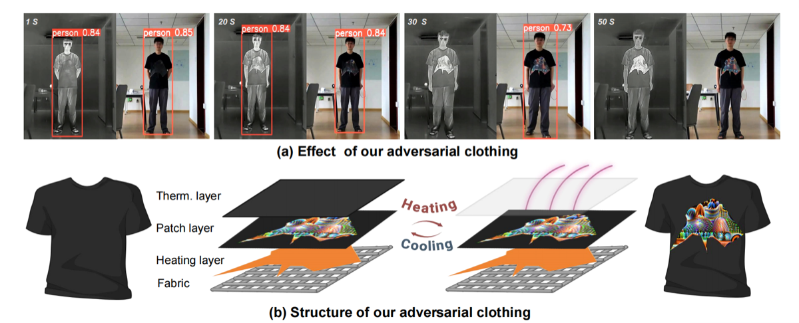
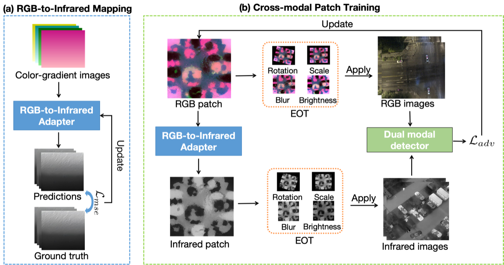
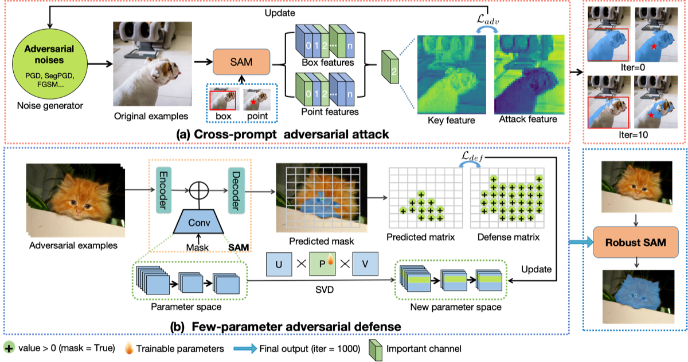
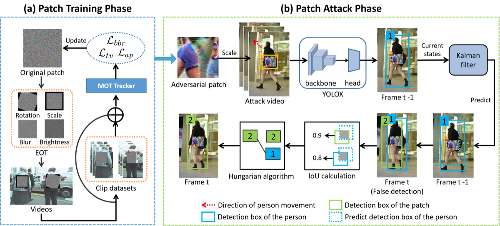
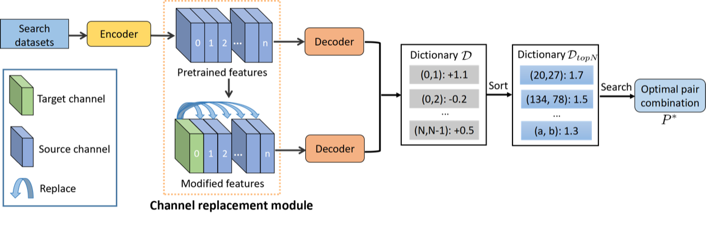
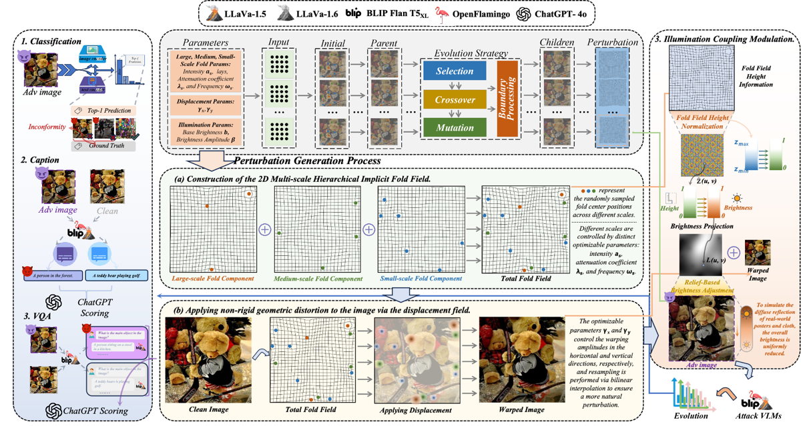
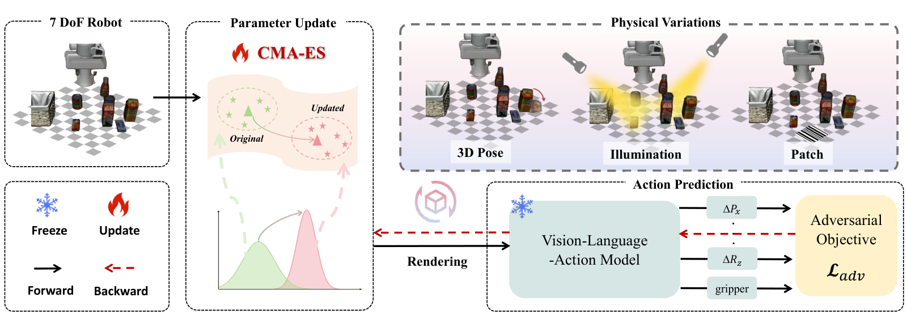
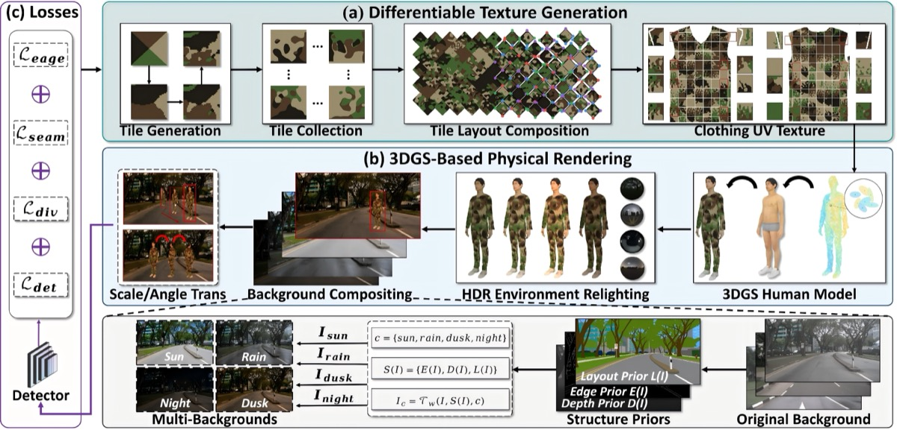

Jiahuan Long
Assistant Professor (Hundred Talents Program), Ph.D. Supervisor
- Email:
- jiahuanlong(at)szu.edu.cn
- Affiliation:
- School of Artificial Intelligence, Shenzhen University
- Office:
- Room 822, Huiyan Building, Yuehai Campus
- Research:
- Visual adversarial attacks, Embodied AI security, VLLM security
I am an Assistant Professor (Hundred Talents Program) at Shenzhen University. Before joining Shenzhen University, I completed my Ph.D. from Shanghai Jiao Tong University in 2026, supervised by Prof. Xiaoqian Chen and Prof. Chao Ma. During 2022 to 2026, I was a joint-training PhD student at the Academy of Military Sciences, supervised by Prof. Wen Yao and Prof. Tingsong Jiang. Before that, I received my master's degrees from the University of Electronic Science and Technology of China (UESTC) and the University of Edinburgh in 2020 and 2021, respectively. At UESTC, I was supervised by Prof. Ke Zhang and Prof. Xiaofen Wang. My research interests include visual adversarial attacks, embodied AI security, and multimodal large language model security.
2026年8月，我加入深圳大学，任“百人计划”助理教授，博士生导师。同年6月，获得上海交通大学博士学位，师从陈小前院士和马超教授。 2022年至2026年，我在中国人民解放军军事科学院进行博士联合培养，联合培养导师为姚雯教授和姜廷松教授。 此前，我于2020年和2021年分别获得电子科技大学（UESTC）和爱丁堡大学硕士学位。在电子科技大学学习期间，师从张可教授和汪小芬教授。 我的研究兴趣包括视觉对抗攻击、具身智能安全和大模型安全。
I am recruiting Ph.D. and master's students to work on AI security for Fall 2027. Undergraduate students interested in gaining research experience are also welcome to join our group. Feel free to contact me!
现招收2027年秋季入学人工智能方向的博士生和硕士生，同时，也欢迎有志于参与科研的本科生加入课题组。我将结合学生的研究兴趣与职业发展规划，制定个性化培养方案，欢迎邮件与我联系！
News
- Excited to join the School of Artificial Intelligence at Shenzhen University! 🎉
Selected Papers
Selected-
Thermally Activated Dual-Modal Adversarial Clothing against AI Surveillance Systems
CVPR 2026 (Highlight, CCF A)
@inproceedings{long2026thermalclothing, title={Thermally Activated Dual-Modal Adversarial Clothing against AI Surveillance Systems}, author={Long, Jiahuan and Jiang, Tingsong and Liu, Hanqing and Ma, Chao and Zhou, Weien and Yang, Yang and Yao, Wen}, booktitle={Proceedings of the IEEE/CVF Conference on Computer Vision and Pattern Recognition (CVPR)}, year={2026} }
-
CDUPatch: Color-Driven Universal Adversarial Patch Attack for Dual-Modal Visible-Infrared Detectors
ACM MM 2025 (Oral, CCF A)
@inproceedings{long2025cdupatch, title={Cdupatch: Color-driven universal adversarial patch attack for dual-modal visible-infrared detectors}, author={Long, Jiahuan and Yao, Wen and Jiang, Tingsong and Hou, Jiacheng and Jia, Shuai and Wu, Junqi and Zhang, Xiaoya and Zheng, Xiaohu and Ma, Chao}, booktitle={Proceedings of the 33rd ACM International Conference on Multimedia (ACM MM)}, year={2025} }
-
Robust SAM: On the Adversarial Robustness of Vision Foundation Models
AAAI 2025 (CCF A)
@inproceedings{long2025robustsam, title={Robust SAM: On the Adversarial Robustness of Vision Foundation Models}, author={Long, Jiahuan and Xu, Zhengqin and Jiang, Tingsong and Yao, Wen and Jia, Shuai and Ma, Chao and Chen, Xiaoqian}, booktitle={Proceedings of the AAAI Conference on Artificial Intelligence (AAAI)}, year={2025} }
-
PapMOT: Exploring Adversarial Patch Attack against Multiple Object Tracking
ECCV 2024 (CSRankings)
@inproceedings{long2024papmot, title={PapMOT: Exploring Adversarial Patch Attack against Multiple Object Tracking}, author={Long, Jiahuan and Jiang, Tingsong and Yao, Wen and Jia, Shuai and Zhang, Weijia and Zhou, Weien and Ma, Chao and Chen, Xiaoqian}, booktitle={European Conference on Computer Vision (ECCV)}, year={2024} }
-
Parameter-Free Fine-tuning via Redundancy Elimination for Vision Foundation Models
AAAI 2026 (CCF A)
@inproceedings{long2026parameterfree, title={Parameter-Free Fine-tuning via Redundancy Elimination for Vision Foundation Models}, author={Long, Jiahuan and Jiang, Tingsong and Yao, Wen and Xiong, Yizhe and Xu, Zhengqin and Jia, Shuai and Liu, Hanqing and Ma, Chao}, booktitle={Proceedings of the AAAI Conference on Artificial Intelligence (AAAI)}, year={2026} }
-
When Surfaces Lie: Exploiting Wrinkle-Induced Attention Shift to Attack Vision-Language Models
ACM MM 2026 (CCF A)
@inproceedings{hu2026surfaces, title={When Surfaces Lie: Exploiting Wrinkle-Induced Attention Shift to Attack Vision-Language Models}, author={Hu, Chengyin and Sun, Xuemeng and Han, Jiaju and Zhang, Qike and Chen, Xiang and Wang, Xin and Wei, Yiwei and Long, Jiahuan}, booktitle={Proceedings of the 34th ACM International Conference on Multimedia (ACM MM)}, year={2026} }
-
Eva-VLA: Evaluating Vision-Language-Action Models' Robustness Under Real-World Physical Variations
arXiv, 2025
@article{liu2025evavla, title={Eva-VLA: Evaluating Vision-Language-Action Models' Robustness Under Real-World Physical Variations}, author={Liu, Hanqing and Ruan, Shouwei and Long, Jiahuan and Wu, Junqi and Hou, Jiacheng and Tang, Huili and Jiang, Tingsong and Zhou, Weien and Yao, Wen}, journal={arXiv preprint arXiv:2509.18953}, year={2025} }
-
AdvTiles: Physical Adversarial Camouflage Clothing against Person Detectors via Learnable Tiles
arXiv, 2026
@article{wang2026advtiles, title={AdvTiles: Physical Adversarial Camouflage Clothing against Person Detectors via Learnable Tiles}, author={Wang, Jinlei and Long, Jiahuan and Sun, Mingkai and Guo, Yafei and Huang, Yuanhao and Wang, Ming and Wu, Junqi and Hou, Jiacheng and Chen, Hongbo and Wei, Xingxing and Jiang, Tingsong and Yao, Wen}, journal={arXiv preprint arXiv:2608.06801}, year={2026} }
Awards
- Outstanding Graduate, Shanghai Jiao Tong University
- BYD Scholarship, Shanghai Jiao Tong University
- National Scholarship, University of Electronic Science and Technology of China
- Master of Science with Distinction, University of Edinburgh